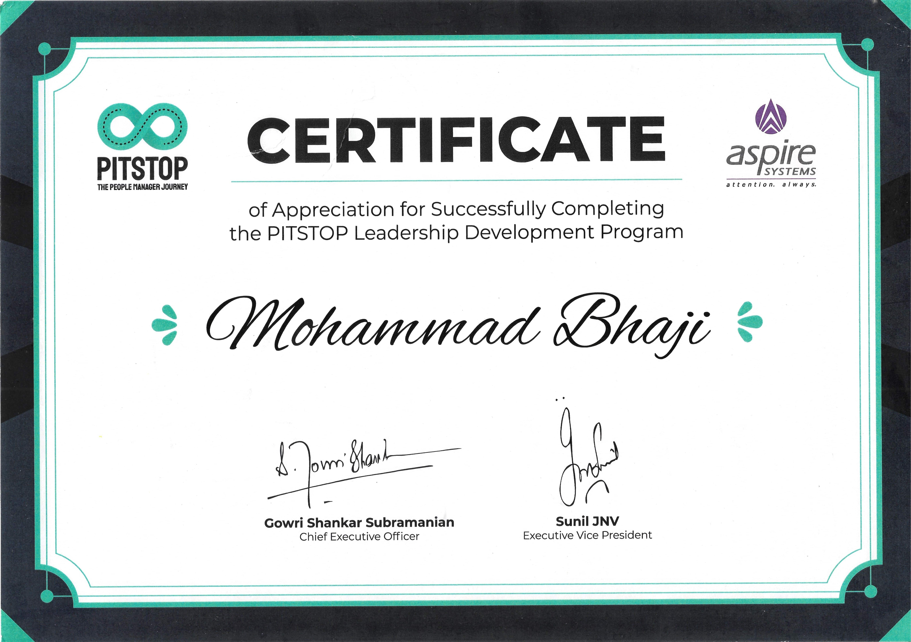
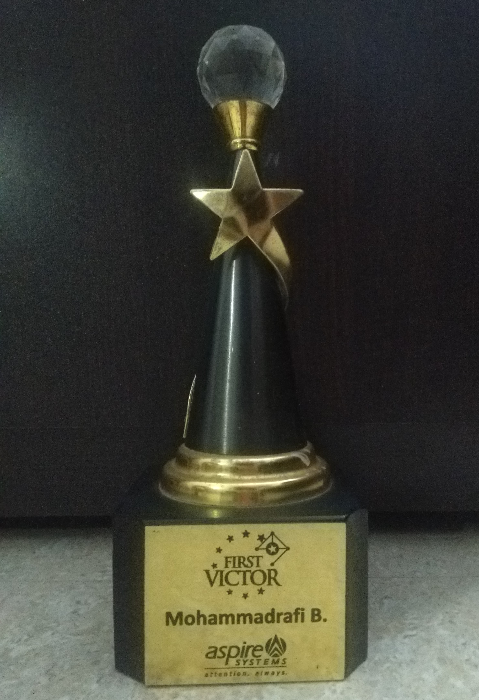

Technical Project Manager, Scrum Master and Account Manager
Chennai, India
mohammadrafi.b@outlook.com
+91 98409-52716
https://www.linkedin.com/in/mohammadrafi-bhajisahib/
Top 5 Roles
Account Manager
Project Manager (Technical)
Scrum Master
Implementation Manager
Error and Escalation Manager
. . .
Top 5 Skills
Account Management (Technical)
Pre-Sales (Technical)
Project | Scrum Management
Professional Services
Cloud Migrations
. . .
Top 5 Tools
Azure DevOps
JIRA
Salesforce - Lightening
Microsoft Project Plan
Microsoft Azure and AWS
. . .
Achievements
Awards
Languages
Tamil - Write | Read | Speak
English - Write | Read | Speak
Hindi - Speak
Urdu - Speak
Travel
Wells (UK) - 2 Times
Tampere (FINLAND) - 3 Times
Minimum of 19 years of IT and software development experience (primarily with Microsoft Technologies)
Expertise in Insurance, Clinical Lab, Telematics, Fishing, Retail, Audit Regulation, Content Management, CRM and Automobiles
Held a variety of positions including Account Manager, Technical Project Manager, Scrum Master, Support Team Manager, Business Analyst, On-site coordinator, Technical Lead and programmer
Managed account of over 45 team members leverages cross-functional teams including Usability, Testing, Mobility, Open Source and Support
Certified Scrum Master (CSM) by Scrum Alliance.
Prepared Revenue Forecasting, Budget planning and creating/renewing the contracts
Assist with pre-sales calls (technical) and provide product demonstrations to customers
Participate in organizing all Scrum rituals such as Sprint Planning, Daily Stand-ups, Sprint Reviews, Sprint Retrospective meetings
Worked very closely with Product Management team and Product Managers to groom the product backlogs
Key collaborator and reviewer of high-level architecture design and database design activities.
Worked as Error Manager, responsible to triage the product bugs and prioritize based on the severity
Worked as Line Manager, responsible for managing client escalations and addressing them immediately
Worked as Implementation Manager, responsible for understanding the customer requirements and converting them into technical solutions
Experience in Application Modernization, converting legacy platforms into SaaS platforms
Involved in Project Estimation, Planning and oversight activities
Experience in SaaS Accelerator platform development that helps to build Multi-Tenant Applications
Experience in 3rd party Integrations (Google Maps, CK Editor, Video JS)
Experience with Cloud Migrations projects
Experience in Customer Onboarding and Production Support activities during the initial launch of the application.
Good understanding of Microservice-based architectures
Participate in off-shore and onsite requirements collection and analysis activities
Help manage deployment and dissemination artifacts
Participate in Feature review and technical code review
Participate in the development of weekly, monthly and annual project progress reports for internal management and customers.
Practical experience with Azure App Service, Azure Web Application Firewall (WAF), Azure Active Directory, Azure Functions, LUIS etc.
Knowledge on AWS Cognito, Lambda and S3
Practical experience with Web Application Frameworks such as ASP.NET Core, MVC, jQuery, Angular, React JS, Node JS, HTML5, CSS3, Bootstrap
Hands on experience in C#, Dotnet Core Web API, Entity Framework, Microsoft SQL
Hands on experience in configuring and managing the CDN (Bunny CDN)
Hands on experience in configuring, monitoring and managing the Pingdom Alerts.
Hands on experience in widely used tools JIRA, Azure DevOps, Confluence, GIT, GIT Pipeline, Power BI, Microsoft Office, Figma, Project Plan, Visio, Dockers
Hands on experience in using SonarQube and Ants Profilers
Involved in Live Technical Troubleshooting for the critical problems along with customers and technical support team
Responsible for process areas and taken care of internal and external audits
Pro active in grooming the fresh talents and onboard them into the team quickly
Developed and delivered engaging technical training programs to diverse groups of employees, fostering a comprehensive understanding of complex concepts within [specific technical domain].
Designed and customized training materials, incorporating real-world examples and interactive activities to enhance participants' learning experience and practical application.
Successfully facilitated training sessions, receiving consistently positive feedback for clear explanations, approachable teaching style, and ability to adapt to participants' learning paces.
Collaborated with cross-functional teams to identify training needs, tailoring content to address specific skills gaps and aligning with company objectives.
Monitored training effectiveness and made continuous improvements based on participant performance and feedback, resulting in increased retention and application of learned skills.
Utilized various training methodologies, including workshops, presentations, and hands-on exercises, to cater to diverse learning preferences and maximize knowledge retention.
Demonstrated expertise in [relevant technologies/tools] and maintained up-to-date knowledge of industry trends, integrating practical insights into training content.
Contributed to the onboarding process by training new hires on technical protocols and systems, enabling faster integration and productivity within the organization.
Collaborated with subject matter experts to ensure training content accuracy and relevance, ensuring alignment with industry best practices and standards.
Skills Acquired: Project Budgeting & Cost Management, Leadership, Pre-Sales, Account Management, Stakeholder Management, Negotiation, Agile Delivery
Role(s) Played: Project Manager / Scrum Master / Account Manager / Implementation Line Manager
Technology: ASP.NET, JQuery, Firebird, SQL, C++, Node JS, Salesforce Add-in, Teams Add-in, SharePoint Add-ins, REST API, RPC, GRPC, Electron, Google Chrome App, Azure Functions, Azure WAF, Azure App Service, Application InSights
Tools Used: Azure DevOps, WIX, Salesforce Lightening, Team City, GIT Pipeline, Azure WAF, AHA, ScrumWorks, MS Teams, Microsoft Office, In-house ECM Software, Draw.IO, Figma, FreeMind, NMAP, Microsoft Log Parser, BurbSuite, Fiddler, Power BI, Pingdom, Bunnny CDN, POSTMAN
Team Size: 47
Next generation intelligent information management platform that improves business performance by helping people find and use information more effectively. Unlike traditional enterprise content management (ECM) systems or content services platforms, it unifies systems, data and content across the organization without disturbing existing systems and processes or requiring data migration. This breaks down silos by delivering an in-context experience for accessing and leveraging information that resides in any system and repository, including network folders, SharePoint, file sharing services, ECM systems, CRM, ERP and other business systems and repositories.
Skills Acquired: Project Budgeting & Cost Management, Leadership, Pre-Sales, Account Management, Stakeholder Management, Negotiation, Agile Delivery
Role(s) Played: Project Manager / Scrum Master / Account Manager / Implementation Line Manager
Technology: ASP.NET, JQuery, Firebird, SQL, C++, Node JS, Salesforce Add-in, Teams Add-in, SharePoint Add-ins, REST API, RPC, GRPC, Electron, Google Chrome App, Azure Functions, Azure WAF, Azure App Service, Application InSights
Tools Used: Azure DevOps, WIX, Salesforce Lightening, Team City, GIT Pipeline, Azure WAF, AHA, ScrumWorks, MS Teams, Microsoft Office, In-house ECM Software, Draw.IO, Figma, FreeMind, NMAP, Microsoft Log Parser, BurbSuite, Fiddler, Power BI, Pingdom, Bunnny CDN, POSTMAN
Team Size: 47
The American quick lube industry provides more than 100 million oil changes every year from over 10,000 standalone locations. The application we have built is taking care of their sales reports, Performance of the service teams in a consolidated (Head Office level) and Individual (Store Level) information in a digital way.
Skills Acquired: Project Management, Pre-Sales, Stakeholder Management, Negotiation
Role(s) Played: Project Manager
Technology: ASP.NET MVC, Angular JS, SSRS Reporting, AWS Cognito , AWS Lambda
Tools Used: Jira and Confluence, Microsoft Office, Draw.IO, Figma, MS Teams, SSRS, SSIS
Team Size: 8
California-based cybersecurity company that provides solutions including antivirus, threat detection and data protection for individuals and businesses.
Skills Acquired: Escalation Management, Leadership, Stakeholder Management
Roles Played: Project Co-ordinator
Technology: C#, .Net Core Web API, AWS Services
Tools Used: MS Teams, Microsoft Office
Team Size: 5
Management consulting firm that provides risk assessment, internal auditing, taxation and regulatory services for businesses.
R&D Edge is:
Simple - Minimize business disruption, save time and reduce complexity. The process is easy to manage, with everything in the one spot.
Insightful - Create full visibility of your R&D project activity and discover deeper insights into your R&D.
Flexible - Enjoy the flexibility and convenience of R&D Edge to support your R&D
Our focussed dashboard and bespoke workflow guides you step-by-step along the way
Skills Acquired: Requirements gathering, analysis and documentation, High level and Low level design, Co-ordinating with customers, Co-ordinating with multiple internal teams
Roles Played: Project Co-ordinator
Technology: ASP.NET , Jquery, SQL, Web API, Angular, CelloSaaS Framework, Microsoft Azure
Tools Used: Microsoft Project Plan, Microsoft Office, Draw.IO, Mocking Bird, Trello, Figma, Fiddler, POSTMAN
Team Size: 15
Cloud based retail management solution is designed to drive more sales with highly effective functionalities, including point of sales transactions, inventory management, booking, accounting, and insightful reporting for retail and beauty industries.
Skills Acquired: Onsite Co-ordination, Project Planning and Execution, Customer Negotiation, Conflicts Management, Risk Management, Quality Management, Stakeholder Management
Roles Played: Project Manager / Business Analyst / Database Architect
Technology: ASP.NET , AngularJS, Jquery, Web API, SQL, In-House Rules Engine, Redis Caching, CelloSaaS Framework, Google Cloud Platform, OpenID
Tools Used: Visual studio, SQL Management Studio, Nunit, SVN, GIT, GIT Pipeline, Microsoft Visio, Microsoft Project Plan, Microsoft Office, SQL Profiler, SSRS Report Builder, Draw.IO, Mocking Bird, FreeMind, Fiddler, Google Cloud VM, POSTMAN
Team Size: 25
The solutions for GPS fleet security, vehicle and trailer tracking, mobile workforce automation, remote site/equipment monitoring, and other sectors within the IoT/M2M segment.
Skills Acquired: Project Planning, Project Delivery, Onsite Co-ordination, Key stakeholders steering, Team Management, Task Management, Quality Management
Roles Played: Associate Project Manager / Project Manager
Technology: ASP.NET MVC, Jquery, SQL, Twilio Messaging , Pubnub Push Notifications, Microsoft Azure , Auth0, Google Maps, Joomla, Android
Tools Used: Visual studio, SQL Management Studio, Nunit, SVN, Microsoft Visio, Microsoft Project Plan, Microsoft Office, SQL Profiler, PRTG Network Monitor, Fiddler, POSTMAN
Team Size: 7
An integrated portal that helps organizations to manage their employee insurance coverage details, payroll , HR adminitration, reports to employee|insurance providers|payroll processing etc.
Skills Acquired: Business Analysis, Project Estimation, Customer Co-ordination, New Customers onboarding & Support, Multiple Team Co-ordination, Release Management, Key stakeholders steering
Roles Played: Project Lead / Release Admin / On-site Co-ordinator / Customer onboarding Specialist / Production Support Lead
Technology: ASP.NET MVC, WCF, Jquery, SQL, Quartz Scheduler, App Fabric Caching, SQL Filestream, SSRS, SliverLight, .NET Work Flow Engine, CelloSaaS Framework
Tools Used: Visual studio, SQL Management Studio, Nunit, SVN, Microsoft Visio, Microsoft Project Plan, Microsoft Office, SQL Profiler, SSRS Report Builder
Team Size: 18
Electronic Reporting System(ERS) is a system developed for Government Fisheries department to manage buyer and seller information and their vessel’s sales note and Log details. This system helps the vessels owners to report and track their salesnotes and vessel tracking (log sheet) details to Government fisheries department online.
Skills Acquired: Business Analysis, Web Application Development and Deployment, Web Services Implementation, Database Design, Database Monitoring, Onsite/offshore co-ordination, Release package preparation, Team Management
Roles Played: Lead Developer / Onsite Co-ordinator / Release Admin / Business Analyst
Technology: ASP.NET, JavaScript,JQuery, C#, SQL , Web Services, XML
Tools Used: Visual studio, SQL Management Studio, Nunit, SVN, Microsoft Enterprise Architect, Microsoft Office, SQL Profiler
Team Size: 5
An advanced vehicle tracking and reporting solution enables you to capture live location based information on your vehicle fleet every 20 seconds and use exception based reporting to increase productivity.
Skills Acquired: Web Application Development and Deployment, Database Design, Database Monitoring, Release package preparation
Roles Played: Lead Developer / Onsite Co-ordinator / Release Admin
Technology: Classic ASP, XML/XSLT, ASP.NET, C#, JavaScript, JQuery
Tools Used: Visual studio, SQL Management Studio, Nunit, SVN, Microsoft Enterprise Architect, Microsoft Office, SQL Profiler
Team Size: 5
Fully integrated Windows-based system for organizations and universities engaged in non-clinical evaluation studies. From single-user Pathologists to full-function global Toxicology/Pathology laboratories, Provantis streamlines processes and workflows with straightforward, intuitive functionality for simple and complex studies within a GLP or non-GLP environment.
Skills Acquired: Windows Application Development
Roles Played: Developer
Technology: Classic ASP, XML/XSLT, ASP.NET, C#, JavaScript, JQuery
Tools Used: Visual studio, SQL Management Studio, NUnit, SVN
Team Size: 10
Web Application that manages the variety of services offered and its operations for Beauty Salon and Spa.
Skills Acquired: Web Application Development, Database design, Low level design, Release package preparation
Roles Played: Developer
Technology: ASP.NET, JavaScript, C#, SQL
Tools Used: Visual studio, SQL Management Studio, NUnit, Visual Source Safe
Team Size: 3
An integrated platform that manages the organization's Employee details, Employee Leave details and Employee performance details.
Skills Acquired: Web Application Development, Database Queries and Monitoring
Roles Played: Developer
Technology: ASP.NET, JavaScript, C#, SQL
Tools Used: Visual studio, SQL Management Studio, NUnit, Visual Source Safe
Team Size: 3
Certified Scrum Master
Bachelor of Engineering (Computer Science and Engineering)
Diploma in Electrical and Electronics